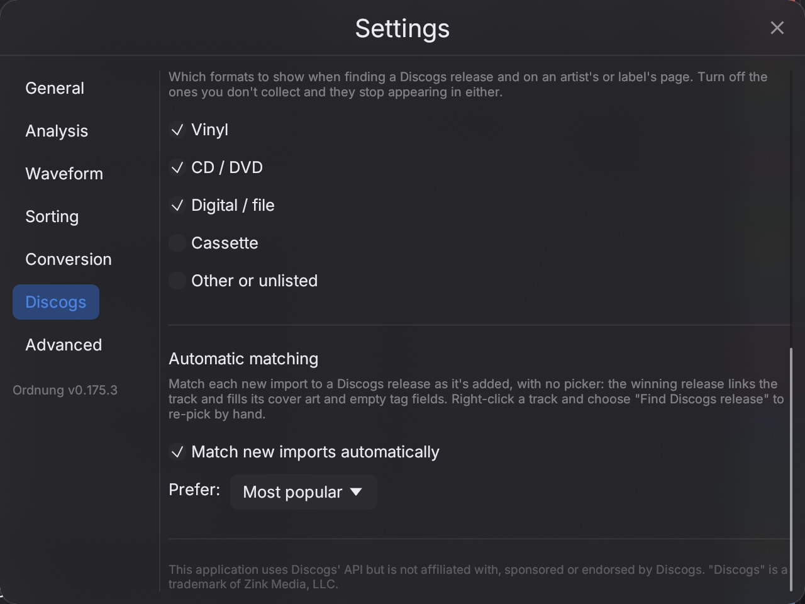
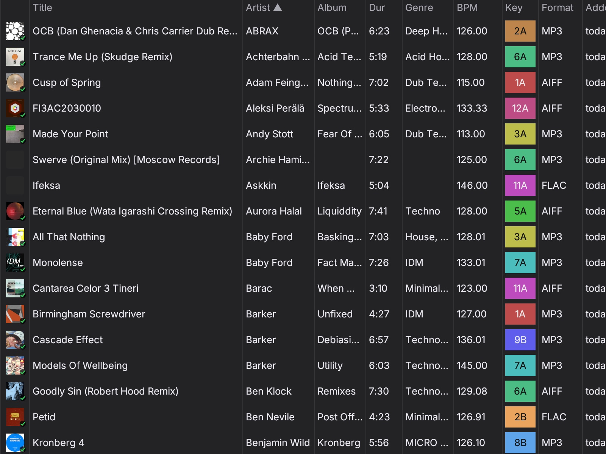
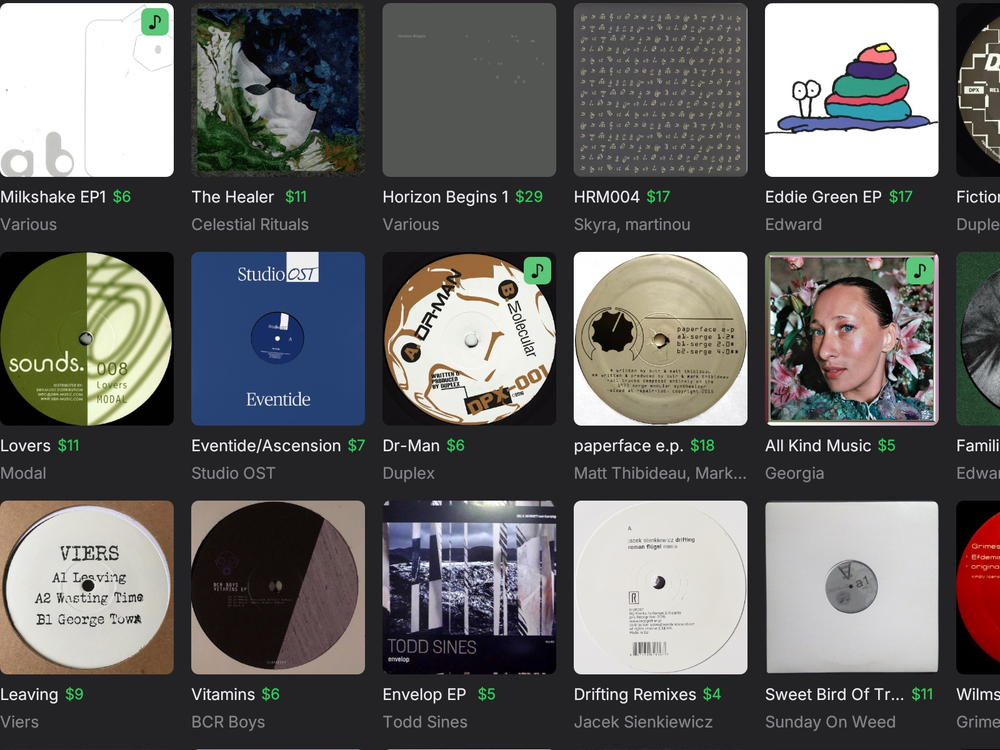
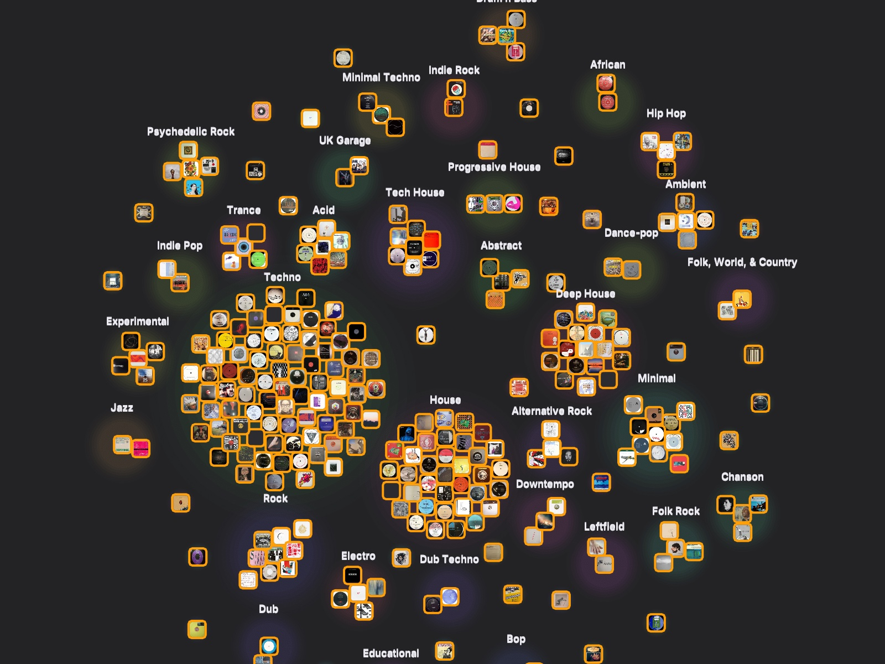
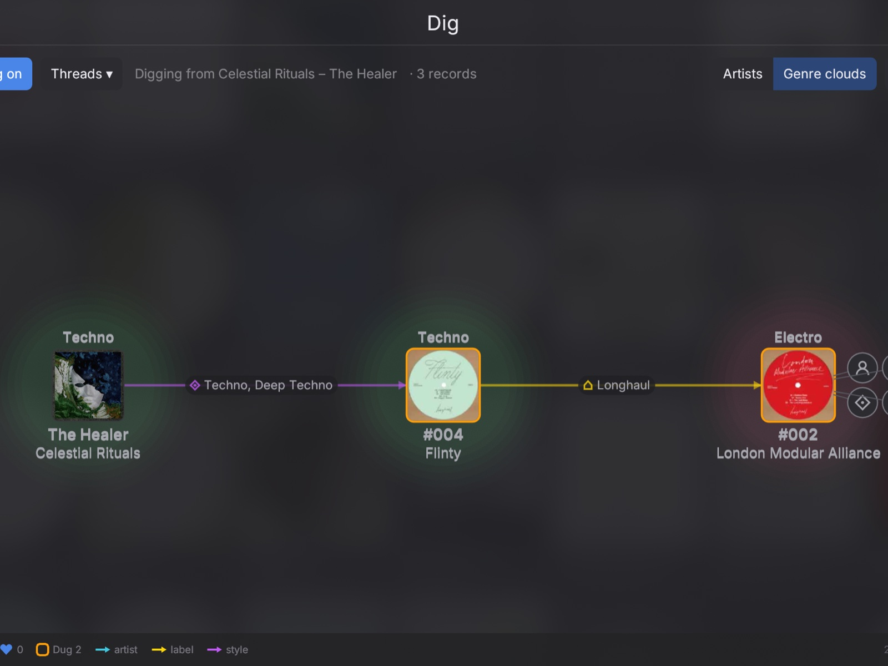
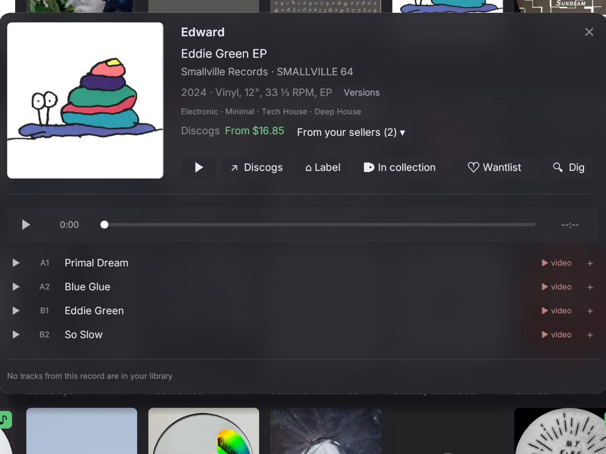
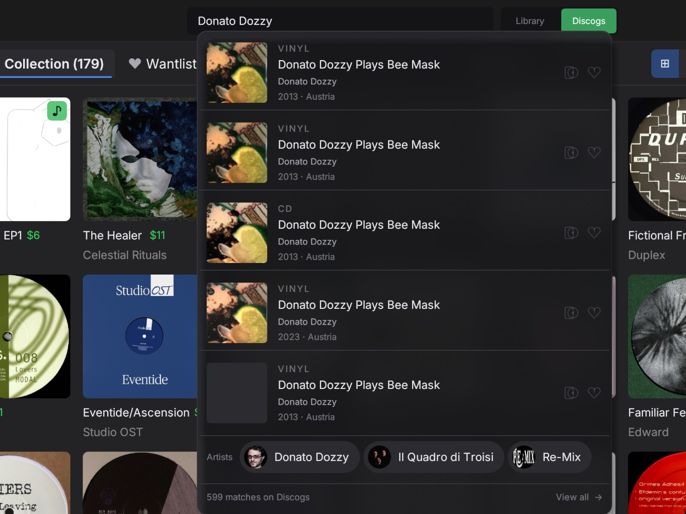
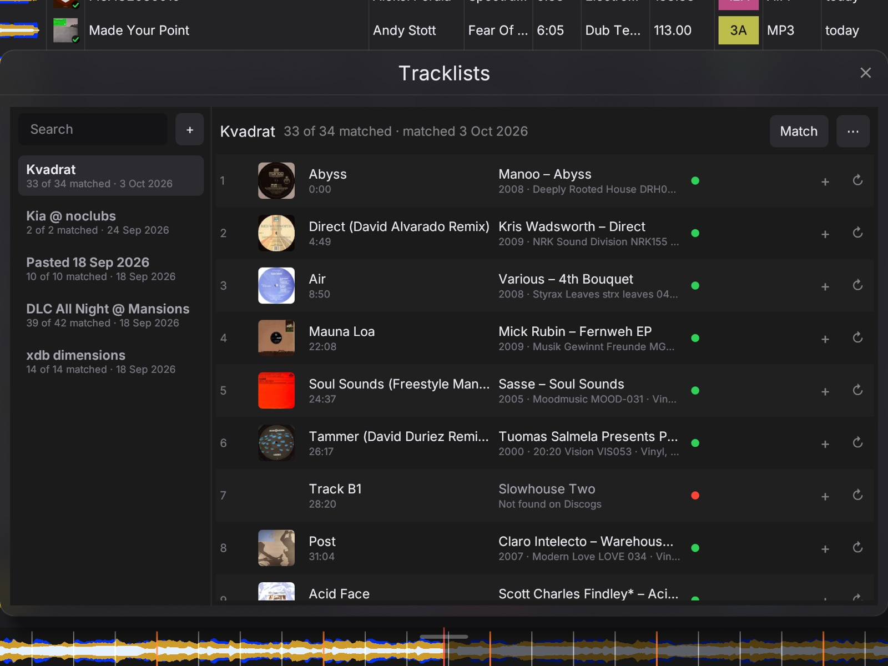
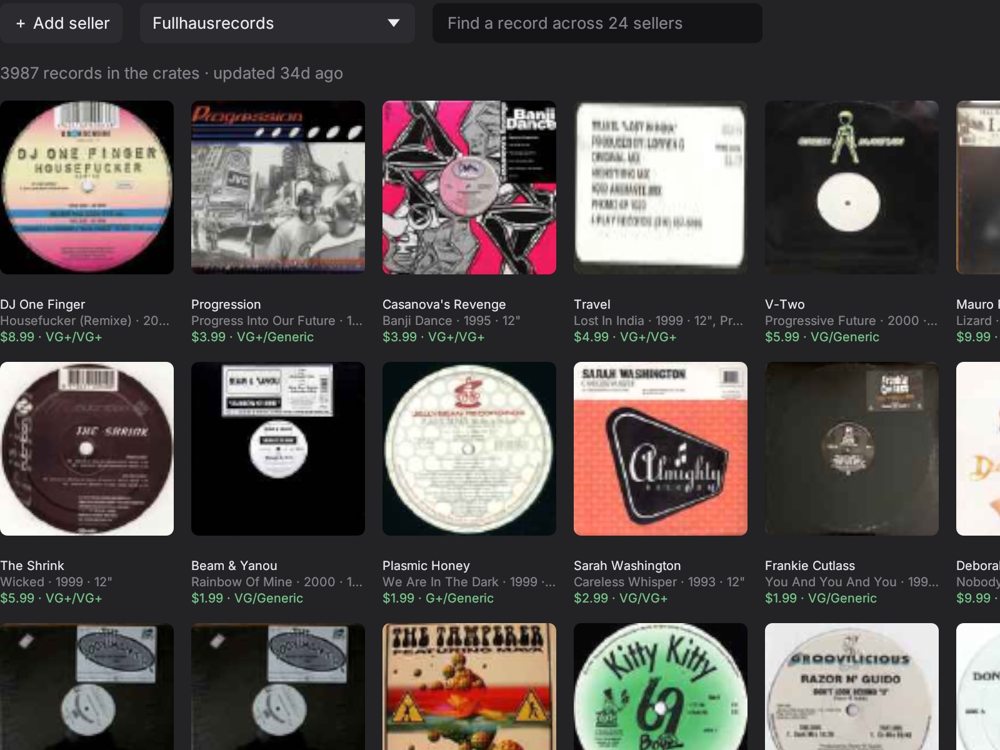
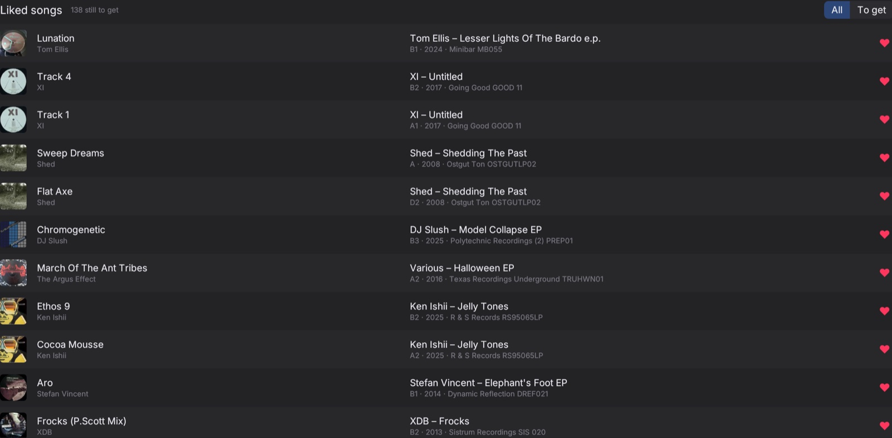

Cues and loops, on the waveform
Eight hot cues, memory cues and a beat loop on every track, with the beatgrid, key lock and pitch right there.
A music library and a record shelf for DJs. Your files, your cues, your vinyl and all of Discogs, in one window.
Ord isn't notarized by Apple, so Gatekeeper blocks it once. Three clicks and it opens from then on.


Eight hot cues, memory cues and a beat loop on every track, with the beatgrid, key lock and pitch right there.

Turn on automatic matching and every file you add is looked up on Discogs as it lands: the release gets linked, the cover art comes down, and empty tags like album, label, genre and year are filled from the record. Pick which pressing wins, and re-pick any track by hand with "Find Discogs release".

Every file gets a beatgrid, a Camelot key and a waveform the moment it lands. Harmonic neighbours share a colour.

Your Discogs collection and wantlist as a shelf, with what each record goes for today and which ones you already have as files.

Collection, wantlist and everything you ever dug, laid out as one web and clustered by genre or by artist.

Start on a record and follow a thread, its style, its label, its artist, to the next one. Discogs, as a walk.

Tracklist, playback, the lowest price and your sellers' copies, with the label and Discogs one click away.

The same search bar covers your library and the whole Discogs catalog. Add a record to your collection or wantlist right there.

Paste a mix tracklist and every line gets matched to the record it came from, ready to like, buy or dig.

Save the shops you trust and browse their inventories together, with the condition and the price under every record.

Heart a song on a record, in a tracklist or on the radio. The crate keeps track of what you have as a file and what is still to get.